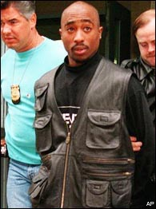

In 1991, Shakur had trouble shopping his solo debut, 2Pacalypse Now. Eventually, Interscope records executives Ted Field and Tom Whalley agreed to distribute the record. Although produced with the help of his Digital Underground crew, the intent of the album was to showcase his individual talent. While Shakur claimed his album was aimed at the problems facing young black males, it was also filled with images of violence by and against police. 2Pacalypse Now quickly attracted public criticism, especially after a young man who killed a Texas Trooper claimed he was inspired by the album. Former Vice President Dan Quayle publicly denounced the album as having "no place in our society". The album did not do as well as Tupac had hoped on the charts, sparking no number one hits. In confidence, Shakur told Shock G that he wanted Shock to pick the beats. While Shakur was a talented rapper, producing was not his forte. He wrote almost all of his lyrics in his songs by himself.
His second CD, Strictly 4 My N.I.G.G.A.Z., was heavily produced by Stretch and the Live Squad, and spurred two number one hits: the emotional Keep Ya Head Up and the playful I Get Around.

As a child, Shakur had dreamed of becoming a Shakespearean actor. Though he never achieved this, he did achieve some fame as a movie actor. Tupac's first appearance in a music video was for Digital Underground's hit single Same Song. His first major motion picture appearance was 1991's Nothing But Trouble, where he made an appearance as himself alongside the other members of Digital Underground. His first starring role was in the critically acclaimed 1991 movie Juice, in which he was hailed by Rolling Stone's Peter Travers as "the film's most magnetic figure." He went on to star in Poetic Justice (with Janet Jackson), Above the Rim, Gridlock'd (with Tim Roth), Bullet, and Gang Related. He had also been slated to star in the Hughes brothers' "Menace II Society" but was replaced by Larenz Tate after assaulting the directors. (John Singleton wrote the film Baby Boy with Shakur in mind for the leading role, but Shakur died before it was made. It was eventually filmed with Tyrese Gibson in his place and released in 2001, five years after Shakur's death.)
Along with Shakur's rise to fame came a series of altercations with the law that further complicated his public image. Before he started his recording career, he had no criminal record, but in October of 1991, he was stopped by two Oakland police officers for allegedly jaywalking. He claimed that when he told the police "fuck y'all", he was choked, beaten, and had his head smashed on the pavement. He subsequently filed a ten million dollar lawsuit against the Oakland police department, which was eventually settled for $42,000.

In October 1993, Shakur came upon two off-duty police officers whom he perceived as harassing a black motorist on the side of the road in Atlanta. Shakur got into a fight with them and shot both officers (one in the leg, one in the buttocks). He faced serious charges until it was discovered that both officers were intoxicated during the incident and were using weapons stolen out of an evidence locker. The charges against Shakur were dismissed.
In late 1993, he formed the group Thug Life with a few of his friends, including Big Syke, Macadoshis, his step-brother Mopreme, and Rated R. The group released their first album Thug Life: Volume 1 on Interscope in 1994 which, despite its hardcore content, still managed to be certified as a gold record. The group subsequently disbanded after Shakur's release from prison.
In December 1993, Shakur was charged with sexually abusing a woman in his hotel room. According to his account, he met a female fan at a club, Nell's, who was described to him as wanting to "more than meet [him]". She allegedly gave him oral sex on the dance floor before Shakur took her back to his hotel room. The next night, she visited him before he was set to do a show and was giving him a massage in a hotel room. Some friends who were with him that night interrupted the couple, wanting to enjoy the woman's attentions themselves. Shakur claimed to have left the room disgusted and went to take a nap. The girl, disagreeing with his account, accused him of encouraging the three men, pulling her hair, and sodomizing her. Shakur vehemently denied her account, but on February 7, 1995 was sentenced to four and a half years in prison for sexual assault.